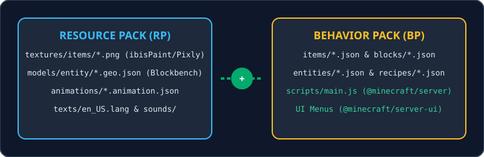
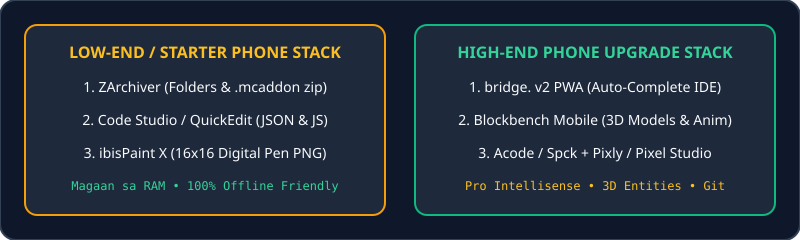

Lesson 1: Ano ang Add-On? (Resource Pack vs. Behavior Pack)
Sa Minecraft: Bedrock Edition, ang isang kumpletong Add-On ay nahahati sa dalawang magkaibang folder: ang Resource Pack (RP) para sa itsura at tunog, at ang Behavior Pack (BP) para sa logic, stats, at JavaScript code.

Lesson 2: Ang Classic Mobile Modder Trio (ZArchiver, Code Studio, ibisPaint X)
Hindi mo kailangan ng mahal na PC o flagship phone para makagawa ng malupit na Add-On! Dito nagsimula ang maraming Pinoy modders:

1. ZArchiver
Pang-gawa ng folders, pang-extract, at pang-compress ng BP at RP folders sa .zip bago i-rename sa .mcpack o .mcaddon.
2. Code Studio / QuickEdit
Magaan na code editor sa Android na may syntax highlighting para sa .json at .js nang hindi nagla-lag ang phone.
3. ibisPaint X
Gamitin sa 16x16 o 32x32 canvas, piliin ang Digital Pen brush, buksan ang Grid, at i-export bilang Transparent PNG.
Lesson 3: Mas Quality na Apps Kapag High-End ang Phone Mo
Kung malakas ang processor at RAM ng phone mo, ito ang mga pro-level alternatives na magpapabilis nang sobra sa paggawa mo ng Add-On:
1. bridge. v2 IDE (editor.bridge-core.app) — Upgrade sa Code Studio
Pwedeng i-install bilang PWA app sa Chrome Android/iOS. May built-in auto-complete para sa lahat ng Minecraft JSON components at @minecraft/server Script API, plus automatic UUID generator!
2. Blockbench Mobile / PWA (blockbench.net) — Para sa 3D Models & Animations
Gumawa ng custom 3D mobs, custom 3D swords/guns, at keyframe animations direkta sa phone o tablet!
3. Pixly / Pixel Studio / Resprite — Upgrade sa ibisPaint X para sa Pixel Art
Dedicated pixel-art editors na may tiling preview (para makita kung seamless ang custom block texture mo), sprite sheet animation, at palette management.
4. Acode / Spck Editor + MT Manager (Shizuku)
Para sa malinis na JavaScript coding na may Git support, at MT Manager / Shizuku para ma-access ang restricted Android/data/com.mojang.minecraftpe folder sa Android 11–14+.
Lesson 4: Paano I-Import ang Add-On sa Mobile (.mcpack at .mcaddon)
- Sa ZArchiver, piliin ang iyong
MyAddon_BPatMyAddon_RPfolders. - I-compress bilang standard
.ziparchive. - Palitan ang dulo mula
.zippapuntang.mcaddon(hal.PinoyLegends.mcaddon). - I-tap ang file sa ZArchiver at piliin ang Minecraft—kusang i-i-import ng laro ang BP at RP!
Lesson 5: Paano Mag-Setup sa Windows 10/11 PC
Sa PC, gumamit ng Visual Studio Code (kasama ang extension na Blockception's Minecraft Bedrock Development) at ilagay ang iyong ginagawang pack sa development_behavior_packs folder:
Pindutin ang Win + R at i-paste ang path na ito:
%localappdata%\Packages\Microsoft.MinecraftUWP_8wekyb3d8bbwe\LocalState\games\com.mojang